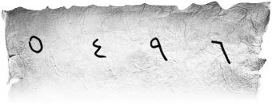

Bahçedeki büyük erguvanın gölgesine oturdular. “Ben size birer tükenmez getireyim” dedi Müzeyyen Babaanne ve eve doğru yöneldi.
Çocuklar, önce metal cismi incelediler; üzerinde “L. D. V.” yazıyordu. Bir makine dişlisine benziyordu. Sanki bir çarkın parçası gibiydi. Dört yanında dört tane sembol vardı. Balık, güneş, ağaç, çift başlı kartal.
Erim,
— Bu çark bir yerde lazım olacak ama nerede?
Ardından dikkatle kil tableti incelediler. Üzerinde “Sayfa 54’deki şahsa ulaş” yazıyordu. Erim hemen kitabın 54. sayfasını açtı, dört tane rakam ve bir bilmeceyle karşılaştı:

5-4-9-6
Arabacının sık sık gördüğü,
Çobanın ara sıra gördüğü,
Allah’ın hiç görmediği.
— Allah’ın hiç görmediği ne olabilir ki?
Nisan,
— Durun! Bu sayfada da farklı yazılmış harfler var, bakın.
Harfleri bir araya getirdiler, “Sizi takip ediyor” yazısı çıktı.
— Birisi bizi takip ediyor olmalı. Baban o zamandan takip edileceğimizi tahmin etmiş.
— Kim acaba?
Sanem,
— O Arap olabilir mi?
Erim,
— Ne işi var bizim duvarda bir Arap’ın Allah aşkına?
— Yanlış görmüşsündür!
O sırada Müzeyyen Babaanne tükenmezleri getirdi. Çocuklar bardakları alıp içmeye başladılar.
— Yav babaanne, annemin tükenmezi hiç böyle güzel olmuyor, bayılıyorum sizin yaptığınız tükenmeze, dedi Zafer.
— Hep öyle olur oğlum, bizimkilere de Sevim Hanım’ın yaptığı tükenmez daha güzel gelir, değil mi çocuklar?
— Doğru babaanne, dediler hep bir ağızdan.
— “Komşunun tavuğu komşuya kaz görünür” diye boşuna söylememişler.
— Ya da bahçedeki ağaçlar Sanem’e zenci görünürmüş!
Hepsi gülüştü.
— Babaanne bak, babam şunu sormuş.
Bilmeceyi okudular. “Tövbe tövbe...” dedi yaşlı kadın, “Allah’ın görmediği bir şey mi olurmuş? Niye böyle bir şey sordu ki Erdoğan’ım? Hem Allah’ın görmediği kişiye siz nasıl ulaşacaksınız ki? Zor çok zor oğlum, bunu bulsa bulsa Muhittin Bey bulabilir” derken yanakları al al oldu, “O, çok akıllıdır, bilirsiniz.”
— Muhittin Dede’ye gidelim. Muhittin Dede bize yol gösterir.
Önde Erim, Zafer, Nisan, hemen arkalarında Sanem’le Simin el ele, onların arkasında Cimbo, onların da arkasında uçan bir saka kuşu (ekibe girmeye çalışıyor) köşkün bahçe kapısından çıktılar ve Muhittin Dede’nin atölyesine doğru yola koyuldular.
Size Muhittin Dede’yi tanıtmalıyım ve atölyesini de. Kimisi doksan yaşında diyordu onun için, kimisi daha fazla; yaşını tam olarak bilen yoktu doğrusu. Çok sağlıklı, akıllı ve bilgeydi. Tipi nasıl mı? Büyük bir top düşünün, üstünde küçük bir top, bacakları da orta büyüklükte başka birer top. Yürürken yürüdüğünü kesinlikle fark etmezdiniz, sanki tüm o toplar yuvarlanır, Muhittin Dede de yerden biraz yukarıda yuvarlanarak gideceği yere giderdi. Gözleri küçük ve yeşil, yüzü beyaz, yanaklar hafif kırmızı, saçı beyazlaşmış ama neredeyse yok denecek kadar kısa kesilmiş, modern görünümlü, çok sevimli bir insandı. Öyle zekiydi ki o dönem uzay üssü falan gibi bir yer olsa başına geçebilirdi. İmal edemeyeceği bir makine yoktu. Çocukların inancına göre, aya gitmeyi istese gerekli makineyi, gemiyi, uçağı, her neyse yapar ve giderdi. O kadar güvenirlerdi ona.
Bir de her akşamüstü köşke uğrar; yakaladığı balıkları, topladığı meyveyi, sebzeyi, satın aldığı tereyağını, peynirin yarısını “torunlarım” dediği Erim, Sanem ve Simin’e getirirdi. Müzeyyen Babaanne’yle kapı eşiğinde ayaküstü sohbet edip giderdi.
Atölyesi gizemli ve harika bir yerdi. Deniz kıyısında, bahçesinin üstü asmalarla örtülmüş Rum yapısı yüksek tavanlı bir atölye, duvarları teknik cihazlar, alet, edevat, kurutulmuş deniz canlıları, ilginç mühendislik çizimleriyle doluydu. Saatlerce sadece duvarlara bakabilirdiniz. İçeride birkaç kilitli oda vardı. Orada geniş bir depo vardı büyük ihtimalle ama çocuklar orayı hiç görmemişlerdi.
Muhittin Dede’ye aralarında “beybaba” derlerdi, bir yerde o da babaları sayılırdı. Geçmişte ne yaptığını bilen yoktu, sadece dünyanın pek çok yerinde bulunduğunu anlayabiliyorlardı. Hatta bir keresinde Küba’da neler gördüğünü anlatmıştı çocuklara. Çok önemli bir adam olduğu kesindi. Kahveci İğdeli İsmail, yemin billah ederek bir gece Mustafa Kemal Paşa’nın, Muhittin Dede’yi ziyaret ettiğini, deniz kıyısındaki masada saatlerce sohbet edip yemek yediklerini gördüğünü söylemişti. Muhittin Dede’ye sorduklarında, “Olur mu öyle şey, Gazi Paşa’nın böyle değersiz bir balıkçının yanında ne işi var?” demişti herkese.
Atölyeye vardıklarında ikizler, Muhittin Dede’ye doğru koştular. Sanem ve Simin, biri bir bacağında, diğeri diğer bacağında ağaca sarılmış koalalar gibi, çift ağızdan anlatmaya başladılar:
— Beybaba ne oldu biliyor musun?